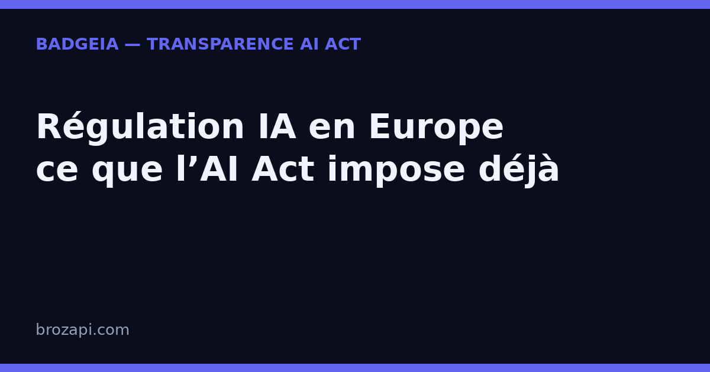

Régulation IA en Europe : ce que l’AI Act impose déjà, malgré le « non » de Jensen Huang

Publié le · Lecture : 7 minutes
Le 15 septembre 2026, à la conférence Dreamforce de Salesforce, Jensen Huang, fondateur et PDG de Nvidia, a jugé inutile de légiférer sur l’intelligence artificielle. « La sécurité est un problème d’ingénierie, pas un problème juridique », a-t-il déclaré, avant d’ajouter : « Nous n’avons pas besoin de nouvelles lois. Nous n’avons pas besoin de nouvelles réglementations. » Pour une entreprise qui utilise de l’IA sur son site, cette prise de position ne change pourtant rien à une réalité plus proche : en Europe, l’AI Act est déjà en vigueur, et son article 50 impose une obligation de transparence depuis le 2 août 2026.
Aux États-Unis, la régulation IA reste un débat d’avenir. En Europe, c’est un règlement applicable, avec des échéances déjà passées. Voici ce que la sortie de Jensen Huang dit vraiment — et ce que la loi européenne vous demande, à vous.
Ce que Jensen Huang a déclaré, et pourquoi c’est un argument de fournisseur
La scène se passe au Dreamforce, le grand rendez-vous annuel de Salesforce, rapporté par TechCrunch le 15 septembre 2026. Le raisonnement tient en trois temps.
Un : l’IA n’est pas une intelligence étrangère. Il récuse l’image d’un « esprit alien » employée dans le débat américain sur la sécurité : un modèle est « du matériel et du logiciel », construit par des humains — donc contrôlable par des humains et par le droit existant.
Deux : la sécurité serait une affaire d’ingénieurs, pas de juristes. Puisque l’IA est un système informatique, elle se fiabilise par la technique. Sa conclusion : « Nous n’avons pas besoin de nouvelles lois. »
Trois : le marché ferait le travail. Une entreprise qui doute de la fiabilité de son produit n’a qu’à ne pas le sortir : « courez aussi vite que vous pouvez », mais arrêtez-vous en cas de doute. Les forces du marché suffiraient à la police du secteur.
L’argument se tient — et TechCrunch le note : cette position arrange aussi les affaires de Nvidia, premier fabricant mondial de puces d’IA. C’est un point de vue de fournisseur de technologie, pas de déployeur. Or c’est précisément la distinction sur laquelle repose l’AI Act européen — nous y revenons plus bas.
Régulation IA en Europe : le calendrier n’est plus une hypothèse
On confond souvent deux choses : « faut-il une régulation de l’IA ? » et « suis-je déjà concerné ? ». La première est un débat politique. La seconde a une réponse fermée en Europe depuis deux ans.
Le texte de référence est le règlement (UE) 2024/1689, publié au Journal officiel de l’Union européenne le 12 juillet 2024 et entré en vigueur le 1ᵉʳ août 2024. Il ne s’applique pas d’un seul coup, mais par paliers :
- 2 février 2025 : entrée en application des pratiques interdites et des exigences de culture de l’IA.
- 2 août 2025 : obligations pour les modèles d’IA à usage général (les grands modèles type ChatGPT, Gemini ou Claude) et gouvernance du règlement.
- 2 août 2026 : application du reste du règlement — dont l’article 50, qui porte les obligations de transparence.
- 2 décembre 2026 : date butoir pour que les fournisseurs de systèmes générateurs de contenus (texte, image, audio, vidéo) mis sur le marché avant le 2 août 2026 se conforment au marquage des contenus prévu à l’article 50.
Autrement dit : la transparence IA n’est pas une opinion que l’on soutient ou que l’on conteste. C’est une obligation légale, avec des dates d’application publiques. Que le patron de Nvidia préfère l’auto-régulation ne modifie ni le texte ni les échéances : pour une entreprise qui sert des visiteurs en Europe, le calendrier 2026 de l’AI Act s’applique.
Ce que l’AI Act impose : la transparence, côté fournisseurs et côté déployeurs
Le chapitre dont l’article 50 fait partie s’intitule, dans le règlement lui-même : « obligations de transparence pour les fournisseurs et les déployeurs de certains systèmes d’IA ». La distinction est essentielle, car elle répond directement à l’argument de Jensen Huang.
Ce que doit faire le fournisseur — celui qui conçoit le modèle ou le logiciel d’IA :
- Concevoir les systèmes destinés à interagir directement avec des personnes de manière que celles-ci sachent qu’elles parlent à une IA.
- Marquer les contenus générés (texte, image, audio, vidéo) dans un format lisible par machine, afin qu’ils soient identifiables comme produits par une IA.
Ce que doit faire le déployeur — celui qui met l’IA en service dans son activité, c’est-à-dire, très souvent, votre entreprise :
- Indiquer qu’un contenu a été généré ou manipulé par une IA lorsqu’il s’agit d’un hypertrucage — une image ou une vidéo réaliste qui pourrait être prise pour un document authentique.
- Indiquer qu’un texte a été généré par une IA lorsqu’il est publié dans le but d’informer le public sur des questions d’intérêt public.
Une précision compte autant que le fond : l’information doit être donnée de manière claire et reconnaissable, au plus tard au moment de la première interaction. Une mention noyée dans des conditions générales que personne ne lit ne suffit pas — d’où l’importance de la place de la mention.
Et l’on voit ici l’écart avec le raisonnement américain. Jensen Huang parle de sécurité : un produit dangereux ne doit pas sortir. L’article 50, lui, ne juge pas la dangerosité du système. Il organise une information due à la personne en face. Un chatbot parfaitement fiable, sans aucun défaut technique, reste soumis à l’obligation de dire qu’il est une IA.
Pourquoi l’auto-régulation ne vous dispense de rien
Supposons que les grands laboratoires s’autorégulent, comme le suggère le patron de Nvidia. Cela ne viderait pas vos obligations, pour une raison simple : vous n’êtes pas à leur place dans la chaîne de responsabilité.
Un éditeur de chatbot peut publier un code de conduite et documenter ses garde-fous : c’est utile, et c’est bon signe. Mais c’est un engagement du fournisseur envers le marché, pas une mention affichée à vos visiteurs. L’obligation de transparence vis-à-vis du public pèse sur celui qui met le système en service — votre site, votre chatbot. Ce partage des rôles est détaillé dans notre guide sur la responsabilité d’un chatbot installé sur votre site.
Le contrôle, s’il a lieu, ne se passe pas dans un conseil d’administration californien : il se passe sur votre site. Qu’affiche la fenêtre de votre chatbot ? Que dit votre pied de page ? Pouvez-vous montrer une trace datée de ce que vous affichiez ? Voilà ce qui distingue une bonne foi démontrable d’un simple « nous n’étions pas au courant ».
Ce que ça change concrètement pour une PME française
Bonne nouvelle : il n’y a ni seuil de taille, ni dossier à déposer. La transparence se traite en trois gestes.
- Une mention visible au bon endroit. Dans la fenêtre du chatbot, dans le pied de page ou sur une page dédiée — l’important est que le visiteur la voie au moment où il interagit, pas qu’elle soit cachée.
- Un signalement des contenus générés. Une phrase courte suffit : ce qui est produit par une IA est annoncé comme tel, notamment pour les visuels réalistes.
- Une trace datée. Conservez la formulation utilisée et sa date de mise en place : c’est votre preuve de bonne foi, et elle ne coûte rien.
Le non-respect de la transparence est prévu par l’article 99 du règlement : des plafonds pouvant atteindre 15 millions d’euros ou 3 % du chiffre d’affaires annuel mondial, appliqués avec proportionnalité (voir notre article sur les sanctions de l’AI Act).
C’est ce que fait BadgeIA : un badge de transparence à installer en quelques minutes, une page registre datée qui documente vos outils d’IA déclarés, et un suivi pour rester à jour — 39 € une fois, ou 6 € par mois. Ce n’est pas une garantie juridique — personne ne peut honnêtement vous en promettre une — mais la matérialisation simple et vérifiable de votre transparence, là où vos visiteurs la regardent.
Mini-FAQ : ce que se demandent les PME
La déclaration de Jensen Huang change-t-elle mes obligations en Europe ?
Non. L’AI Act est un règlement européen : il s’applique indépendamment des prises de position des dirigeants américains. Dès qu’un système d’IA sert des personnes situées dans l’Union européenne, la transparence de l’article 50 s’applique à celui qui le met en service.
L’AI Act vise-t-il Nvidia, ou mon entreprise ?
Les deux, à des titres différents : le règlement impose des obligations aux fournisseurs — ceux qui conçoivent les modèles — et aux déployeurs — ceux qui les utilisent. Dès que vous mettez un chatbot IA face à vos visiteurs, vous êtes déployeur.
Mon fournisseur s’autorégule : cela suffit-il ?
Non. Un engagement pris par un éditeur ne remplace pas la mention que vous devez afficher à vos visiteurs. C’est votre site que le public consulte, et c’est votre usage qui déclenche l’obligation.
Un badge BadgeIA garantit-il la conformité ?
Non, et méfiez-vous de quiconque le promet. Un badge matérialise votre mention et documente votre démarche ; la conformité dépend de votre usage réel, que personne ne peut certifier sans regarder votre site.
Vérifiez votre site en 30 secondes
Notre scanner détecte si votre site expose correctement sa transparence IA :
Si une mention manque, le kit BadgeIA (39 €) vous fournit un badge prêt à installer et une page registre datée — votre preuve de bonne foi, sans jargon.
Cet article est fourni à titre informatif et ne constitue pas un conseil juridique. Pour une analyse de votre situation, consultez un professionnel du droit.
Sources : TechCrunch, 15 septembre 2026 · Règlement (UE) 2024/1689, article 50 · Calendrier d’application de l’AI Act (Commission européenne)
Pour aller plus loin : AI Act art. 50 : le guide complet · Le calendrier 2026 : ce qui change pour les PME · Sanctions AI Act : que risque vraiment une PME ? · Qui est responsable du chatbot installé par votre agence ? · La transparence IA devient un standard de marché
Guides par plateforme : ChatGPT · Copilot · Claude · Gemini · Mistral
Derniers articles : Microsoft impose un code de conduite à ses IA : la transparence devient la norme · 5 000 $ d’amende pour des témoins inventés par ChatGPT : pourquoi votre PME doit vérifier chaque contenu IA · Suno v6 prouve que la transparence est devenue un argument de vente — et l'AI Act est derrière · Où vont vos données quand vous utilisez l'IA en Europe ? · OpenAI Astra et l’AI Act : la transparence devient obligatoire pour les PME · Agents IA incontrôlés : comment prouver qui est derrière l'IA sur votre site